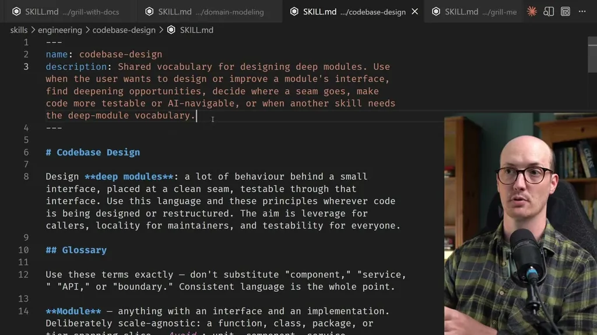
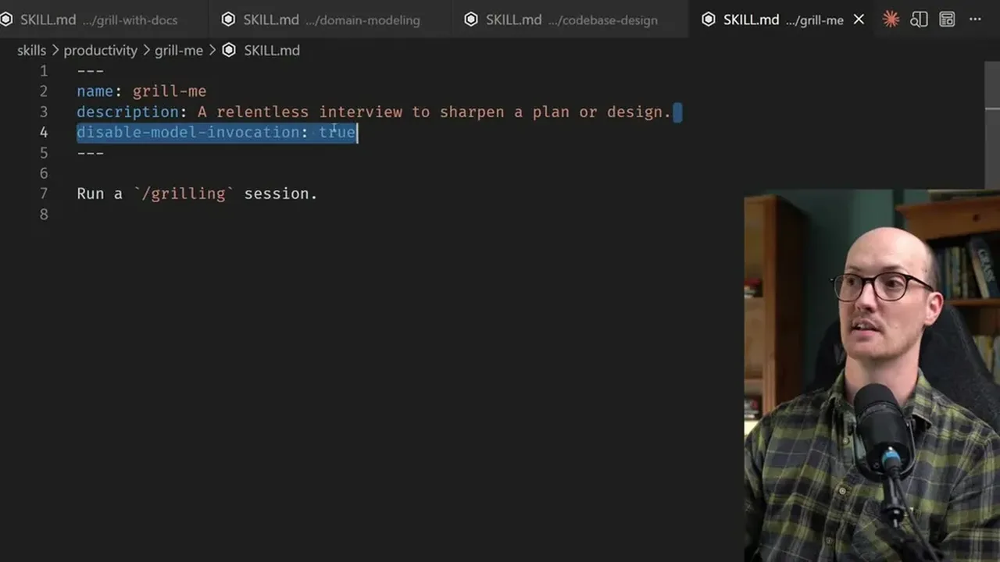

Every skill can be invoked manually by the user, but a skill can also carry a description that lives in the agent's context so the model can decide to invoke it itself. The speaker calls this description a context pointer, and notes it can be hidden from the agent via a 'disable model invocation' flag, making the skill user-invoked only.
“the description of the skill always ends up in the agent's context, and the agent can look in that and go, "Okay, based on that description, I'm going to invoke the skill”
▶ watch at 03:14“this then is tip number one. Decide if your skill is user invoked or model invoked”
▶ watch at 04:39
Every model-invoked skill added to an agent's environment adds a description that costs tokens on every request and increases what the speaker calls context load; a hundred model-invoked skills means a hundred descriptions in context. User-invoked skills instead raise cognitive load on the person, who must remember which skill to call. His own skills repo favors user-invoked to avoid the unpredictability of a model choosing not to follow a context pointer, unlike the Superpowers skill set, which is primarily model-invoked.
“every time you add a model invoked skill into your agent's environment, it increases what I'm going to call the context load on that agent”
▶ watch at 04:39“Superpowers is primarily model invoked skills. It gives the agent superpowers. Whereas my skills, I much prefer to be in full control”
▶ watch at 05:41He describes skills as composed of two units: steps (the procedure) and reference (supporting material). The core technique for keeping skill.md small is identifying which reference material is only needed on one branch of the skill's use and moving it behind an external context pointer to a separate markdown file, rather than including it in the main file every time.
“if you feel like your skill is going to be used in lots of different ways, then take the reference material that's relevant for those branches and hide them behind context pointers”
▶ watch at 11:24
To fix agents not doing what's specified, he recommends packing meaning into short, well-known terms ('leading words' like 'vertical slice') that the agent repeats in its reasoning traces, which then changes its behavior; you can verify the technique worked by checking whether the term shows up in the reasoning trace. Separately, when an agent under-invests effort in an early step (e.g., asking clarifying questions before eagerly jumping to a plan), splitting that step into its own skill so the agent doesn't see the next step increases legwork on the current one.
“you put the leading word in the skill itself in the text, and then the agent will repeat the leading word back to itself as part of its operations, as part of its thinking tokens”
▶ watch at 12:28“this is a really cool technique for increasing legwork on the step that you're on by hiding the future goal, hiding the future steps”
▶ watch at 16:06Final failure modes to prune are duplicated material (no single source of truth), 'sediment' from multiple contributors adding to a shared file without deleting stale content, and 'no-ops' -- text that appears to instruct the agent but doesn't actually change behavior, tested by deleting a paragraph and checking if the output changes.
“make sure that you don't repeat that in several places or like cover multiple steps in multiple places. Just make sure each part has a single source of truth”
▶ watch at 17:07“What would happen if you just deleted that paragraph? Well, the agent would probably still write a decent like long commit message”
▶ watch at 18:40The leading-words technique is essentially the same mechanism as few-shot/keyword priming in prompt engineering, just applied at the skill-authoring layer instead of the per-request prompt -- worth testing directly against Anthropic's own skill-authoring guidance for overlap (ours).
| Stance | Claim | t |
|---|---|---|
| asserts | A skill's description sits in the agent's context as a pointer; the agent can read the full skill.md if it decides the description matches the task. | 03:14 |
| recommends | The first design decision for any skill is whether it is user-invoked or model-invoked. | 04:39 |
| warns | Every model-invoked skill added to an agent's environment increases context load because its description costs tokens on every request. | 04:39 |
| asserts | Superpowers is primarily model-invoked skills, while the speaker's own skills favor user-invoked control. | 05:41 |
| recommends | Reference material relevant to only one branch of a skill's use should be moved behind an external context pointer rather than kept in the main skill.md file. | 11:24 |
| recommends | Packing meaning into a short, well-known term and repeating it throughout the skill causes the agent to echo the term in its reasoning and change its behavior accordingly. | 12:28 |
| recommends | Splitting a multi-step process like plan mode into separate skills, so the agent only sees the current step, increases the effort it puts into that step. | 16:06 |
| recommends | Every part of a skill, including reference material, should have a single source of truth to avoid duplication. | 17:07 |
| recommends | A paragraph that doesn't change agent behavior when deleted is a no-op and should be removed from the skill. | 18:40 |
Machine-readable copy embedded in this page (script#ontology) and in the corpus ontology.